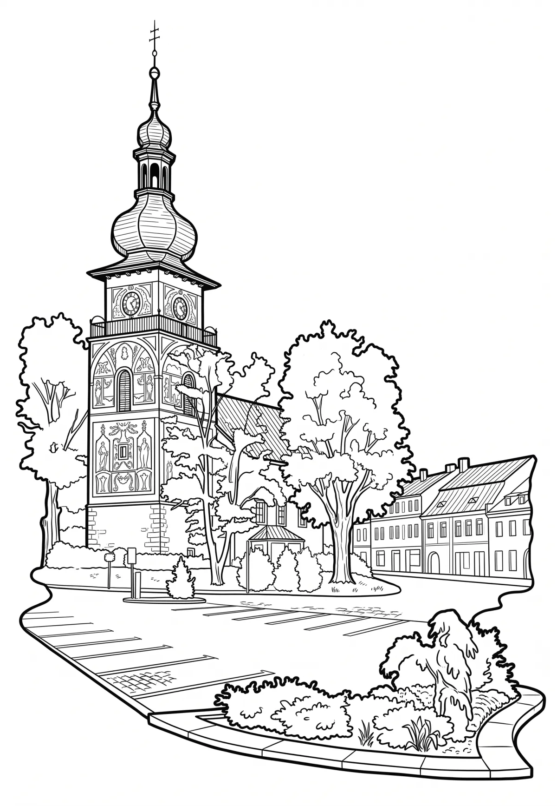

Nové Město na Moravě
Nové Město na Moravě (německy Neustadtl) je město na západě Moravy v okrese Žďár nad Sázavou v Kraji Vysočina. Leží deset kilometrů východně od Žďáru nad Sázavou, na jižním okraji Žďárských vrchů. Žije zde přibližně 9 800 obyvatel. Založeno bylo okolo roku 1250 Bočkem z Obřan, zakladatelem cisterciáckého kláštera ve Žďáru nad Sázavou.
Více na Wikipedii